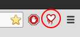
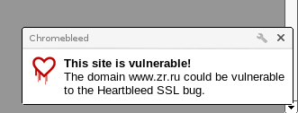

Мой список плагинов vim
Unix time: 1400484602 (24 May 2014 11:30)
- bad-whitespace - Highlights whitespace at the end of lines
- snipMate - snippets
- NERD_tree - интерактивное дерево каталогов
- Powerline - продвинутая строка статуса
- Syntastic - code syntax checker
Цветовая схема - badwolf
Шрифт терминала - Terminus (size: 12)
Chromium plugin "Chromebleed"
Unix time: 1400140203 (15 May 2014 11:50)
Использую удобный плагин, который позволяет в реальном времени
проверить сайт на наличие знаменитой уязвимости Heartbleed.
Количество таких сайтов с момента публикации уязвимости уменьшается,
однако не лишним будет проверить, скажем, платежный шлюз в момент запроса
ввода номера банковской карты.
Плагин устанавливается стандартным для браузера Chromium способом "Настройки"
-> "Расширения" -> "Ещё расширения" -> В строке поиска "Chromebleed"
-> "Установить"
После установки, значёк плагина отображается правом верхнем углу панелек браузера Chromium.

В случае обнаружения Heartbleed уязвимости на открытой странице, в правом нижнем углу
окна бразуера сразу же всплывает уведомление.
Какие-либо действия пользователя на сайте при этом не блокируются.

Заметки о SSH
Unix time: 1399978242 (13 May 2014 14:50)
ssh-keygen - генерация пары публичного и приватного ключей
ssh-add [path_to_private_key] - добавление приватного ключа для использования в ssh agent
Применение публичного ключа на сервере
scp key.pub username@server.com:.
ssh username@server.com
mkdir ~/.ssh
cat key.pub >> .ssh/authorized_keys
service ssh restart
Копирование файла на сервер с паролем
sshpass -p [pswd] scp ...
Выполнение удалённой команды на сервере
ssh username@server.com 'ls'
# Interactive command
ssh -t username@server.com 'top'
Использование git через ssh для Github
git remote set-url origin git@github.com:githubusername/projectname.git
Убрать "долгое" ssh подключение
# Server side
sudo echo "UseDNS no" >> /etc/ssh/sshd_config
Объединение баз KeePassX
Unix time: 1399273505 (05 May 2014 11:05)
При нахождении нескольких версий KeePassX на различных устройствах, без
регулярной синхронизации, возникает проблема расхождения данных о паролях
в каждой из баз. В очередной раз поменяв пароль, думая что я его потерял, а
затем найдя этот самый пароль в KeePass базе другого устройства, я собрал все
имеющиеся у меня .pkb файлы и стал их объединять.
Для начала я попробовал нагугленный арсенал уже имеющихся средств. К сожалению,
он оказался невелик и ни один способ не сработал для меня по разным причинам
(существующие скрипты не поддерживают кириллицу, импорт в KeePass 2 базы KeePassX
пока невозможен в Linux, импорт в формат KeePass 2 через XML просто не работает :)
Я пошел своим путём: Экспорт баз в XML, объединение XML файлов через утилиту diffuse
и импорт результата объедининия обратно в .kdb файл через KeePassX средства импорта.
Сам процесс достаточно прост:
- Создать свободную директорию для xml файлов
- Открыть последовательно все .kdb файлы через KeePassX:
зайти в меню "файл" ->
"Экспортировать в..." -> "KeePassX XML файл".
- Экспортировать файлы в созданную директорию с разными именами
- Последовательно объединить файлы с помощью diffuse (Пример запуска:
diffuse 1.xml 2xml)
- Импортировать XML файл, содержащий все изменения в KeePassX и сохранить как базу .kdb
- Удалить все XML файлы (они содержат пароли в открытом виде) и временную директорию
Небольшой комментарий относительно diffuse. XML содержит в том числе тег последнего изменения
пароля. Если мы видим, что строка изменена, но не знаем, какие изменения сейчас актуальны,
логичным будет применить изменения, содержащие более новую дату в этом теге. Результат diffuse
лучше сохранять отдельным, третьим xml файлом, а затем использовать его как шаблон для
сравнения со следующим xml, шаг за шагом накапливая изменения.
Изменение шрифта в Skype
Unix time: 1398852702 (30 Apr 2014 14:11)
Относительно недавно я решил бороться со "случайным подглядыванием" за текстом,
который пишу или читаю в Skype со стороны рядом находящихся коллег.
Проблема весьма актуальна для большого монитора в условиях open space офиса.
Уменьшить читаемость текста в мессенджере от посторонних глаз можно уменьшая
размер области окна и перемещения самого окна в нижний, правый или левый угол экрана,
а также уменьшив шрифт входящих и печатаемых сообщений.
О реализации второго способа пойдет речь ниже.
Дело в том, что Skype (у меня версии 4.2) для Linux не содержит в настройках
параметры шрифта мессенджера. Поменять их возможно, используя общие настройки
Qt утилитой qt4-qtconfig. По умолчанию в Xubuntu не установлена, поэтому нужно
установить из репозитория.
Перед настройкой выйти из Skype.
Для запуска утилиты в меню системы выбрать "Настройки" -> "Настройки Qt 4"
В самой утилите выбрать вкладку "Шрифты" -> выпадающий список "Размер" и выбрать нужный размер шрифта.
Слева наверху щелкнуть по "Файл" -> "Сохранить".
Закрыть "Настройки Qt 4" и запустить Skype.
Практическим методом я вычислил, что шрифт Sans Serif 7 размера не читаем
(ладно, не читаем, если специально не стоять и не вчитываться, но мы ведь говорим о
случайном подглядывании, верно?) на FullHD мониторе с расстояния более 1.5 метров.
При этом читать и печатать сообщения находясь в 60-80 см от монитора вполне комфортно.
Управление воспроизведением Audacious с клaвиатуры
Unix time: 1398414544 (25 Apr 2014 12:29)
Для прослушивания музыки во время работы я пользуюсь плеером Audacious (v. 3.4 for Ubuntu package).
В процессе работы я всегда стараюсь свести время манипуляций мышью к минимальному за счет использования
"горячих" клавиш клавиатуры. Клавиатура у меня обычная, не мультимедийная и навесить простые операции
с плеером, вроде "play", "pause", "громче", "тише" я могу только при помощи клавишных комбинаций.
Настраивается управление плеером при помощи Audacious плагина "Global Hotkey Plugin".
Как правило, данный плагин уже присутствует в сборке плеера. Для его настройки следует зайти в
меню Audacious -> "Параметры" -> "Модули". В окне модулей выбрать вкладку "Общие". Найти в списке
модуль "Глобальные горячие клавиши". Включить модуль, если не активен (поставить галку).
Выбрав нужный нам модуль в строке, нажать "Параметры"
Привязка клавиш происходит путём выбора в левой колонке из выпадающего списка возможных
действий с проигрывателем, а в правой колонке, щелчком по форме ввода, указать свободную комбинацию
клавиш для данного действия.
Мой список:
| Ctrl + Shift + Numpad Enter |
Pause/Play |
| Ctrl + Shift + Numpad 0 |
Stop |
| Ctrl + Shift + Numpad + |
Увеличить громкость |
| Ctrl + Shift + Numpad - |
Уменьшить громкость |
Mojolicious HTTP client
Unix time: 1398340126 (24 Apr 2014 15:48)
Недавно мне пришлось решать задачу получения данных с web
сервера по HTTP протоколу с проверкой cookie авторизации
на Perl. Однако, вместо использования стандартного для таких
целей LWP, нужно было написать решение при помощи Mojolicious
Useragent.
#!/usr/bin/perl
use 5.010;
use strict;
use warnings;
use Mojo::UserAgent;
my $ua = Mojo::UserAgent->new;
$ua->on(start => sub {
my ($ua, $tx) = @_;
$tx->req->cookies({name => 'user_auth', value => '8044d756b7f00b695ab8dce07dce43e5'});
});
my $tx = $ua->get('http://example.com');
my $res;
unless ($res = $tx->success) {
my ($err, $code) = $tx->error;
warn ($code ? "$code response: $err" : "Connection error: $err");
};
say $res->body;
# Необязательная часть, но полезная, если нужно "пробросить"
# ответ сервера через Mojolicious web сервер клиенту
# $self->tx->res($res);
# $self->rendered($res->code);